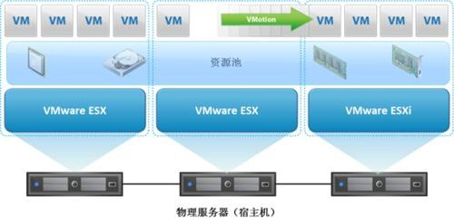

服务器虚拟化主要分为三种：“一虚多”、“多虚一”和“多虚多”。“一虚多”是一台服务器虚拟成多台服务器，即将一台物理服务器分割成多个相互独立、互不干扰的虚拟环境。“多虚一”就是多个独立的物理服务器虚拟为一个逻辑服务器，使多台服务器相互协作，处理同一个业务。另外还有“多虚多”的概念，就是将多台物理服务器虚拟成一台逻辑服务器，然后再将其划分为多个虚拟环境，即多个业务在多台虚拟服务器上运行。

全方位、端到端的虚拟化解决方案
1、I/O链路层优化方案解决动态虚机与固态存储的性能矛盾
2、磁盘阵列解决网络存储数据传输增加负载的瓶颈问题
3、良好容错能力确保虚拟机关键业务的高可用性
4、多层次数据保护方案兼顾性能和安全
服务器准备时间更快
对数据中心的管理员来说，有什么能比快速的开机和准备时间更吸引人呢?服务器虚拟化的弹性功能让你在一眨眼的时间里完成系统的准备和部署。你可以快速的克隆镜像、主模板或者是现有的虚拟机，只需要几分钟就可以建立并且运行服务器。
消除硬件厂商锁定
虽然并不总是坏事，但被某一家服务器供应商牢牢捆住总让人有点不舒服。服务器虚拟化可以把这些底层的硬件抽象出来，用虚拟的硬件和管理器替换掉它们，这样对于用户来说可选择的余地就大得多了。
提高运行时间
大多数服务器虚拟化平台都能够提供一系列物理服务器无法提供的高级功能，用来保持业务延续和提高运行时间。这些功能在不同的虚拟化平台上名称各异，但内容差不太多，比如实时迁移、存储迁移、容错、高可用性还有分布式资源管理。这些功能能够在出现问题时轻松快速的把虚拟机从一台服务器上移动到另一台，同时还能确保业务的延续
提高灾难恢复能力
在灾难恢复方面，虚拟化技术带给企业三项重要功能。一是硬件抽象功能，由于不再锁定在某一厂商，在灾难恢复时就不需要寻找同样的硬件配置环境，这样在搭建灾难恢复站点时可以省下一大笔钱。二是通过整合服务器减少了物理服务器数量，在灾难恢复时需要的工作会少得多。三是大多数企业级的服务器虚拟化平台会提供在发生灾难时帮助自动恢复的软件。
隔离应用
在物理世界里，为了隔离应用，数据中心经常使用一台服务器一个应用的模式，出现的问题是显而易见的，越来越多的服务器和越来越高的成本。而通过服务器虚拟化提供的应用隔离功能，你只需要很少几台物理服务器就可以建立足够多的虚拟服务器来解决这个问题。
延长陈旧应用的生命周期
每个企业都会有一些遗留的陈旧应用，它们无法在新的操作系统上运行，无法使用新的硬件，IT团队一谈起它们就会唉声叹气。通过虚拟化，你可以把这些陈旧应用封装到它们的适合环境里，延长它们的生命周期，你也就可以顺手处理掉那些放在机房角落里的奔腾机器了。
帮助你走入云计算
通过虚拟化你的服务器，把底层硬件抽象出来，这可以说已经为搬到云里做好了准备。迈出的第一步可能是从虚拟化的数据中心搬到私有云，然后随着公共云的发展，相关技术的不断成熟，你会越来越喜欢云提供的各种服务。